Valve Positioners
Designed for performance and reliability, our solution offers exceptional ease of use with simple installation, seamless commissioning, and contactless position feedback for dependable operation.It supports advanced digitalisation through premium online diagnostics that enable pr
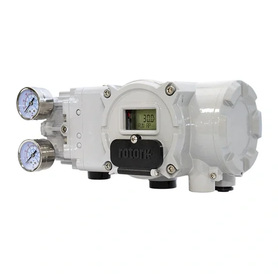
Ảnh sản phẩm chính thứcValve Positioners model
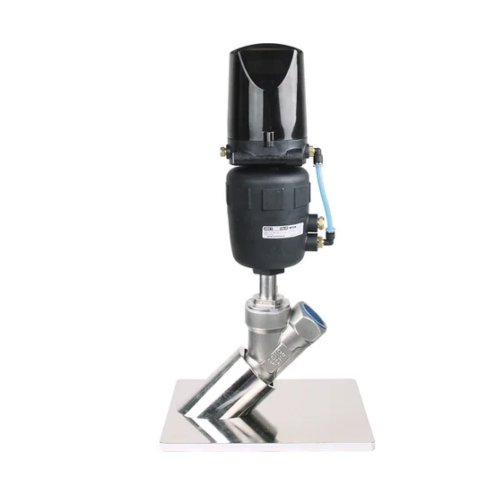
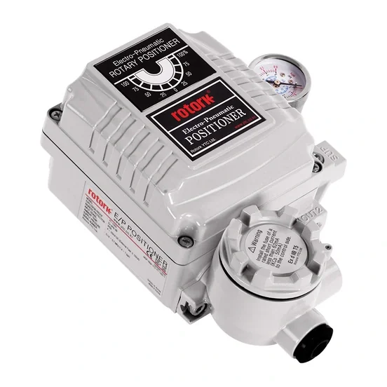
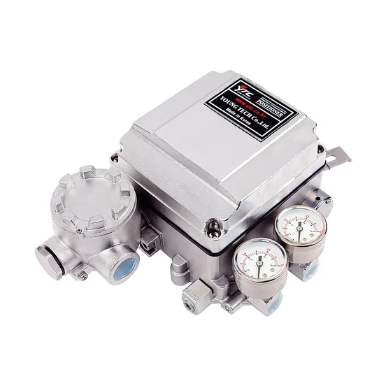
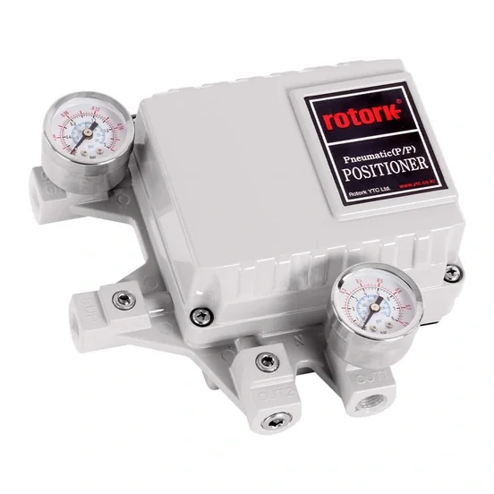
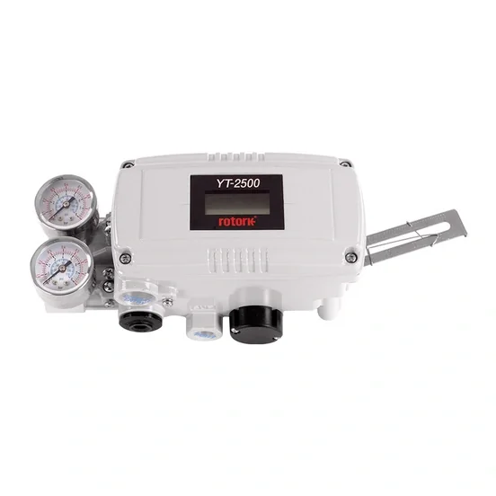
YT-2500
YTC - Smart positioner - YT-2500 Piezo technology with communications
Xem model →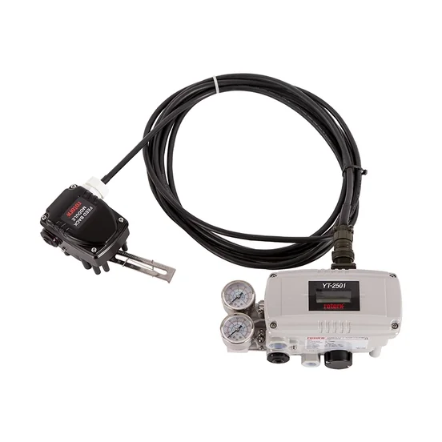
YT-2501
YTC - Smart positioner - YT-2501 Piezo technology with communications
Xem model →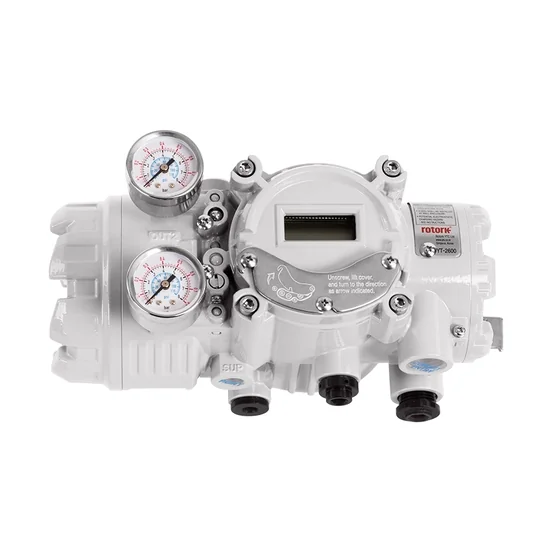
YT-2600
YTC - Smart positioner - YT-2600 Piezo technology with communications
Xem model →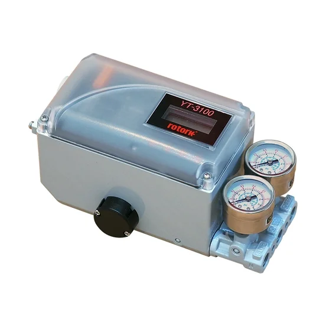
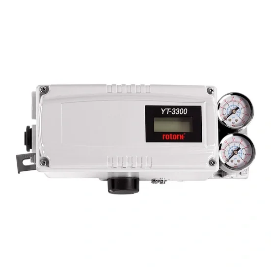
YT-3300
YT-3300 Smart Valve Positioner accurately controls valve stroke, according to input signal of 4~20mA being delivered from controller.
Xem model →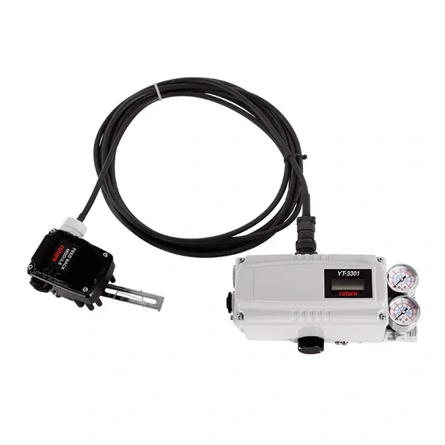
YT-3301
YTC - Smart positioner - YT-3301 Torque motor technology with communications
Xem model →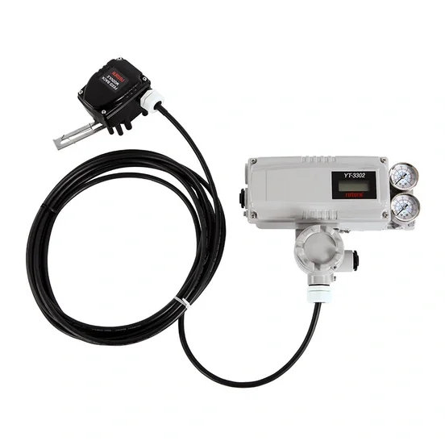
YT-3302
YTC - Smart positioner - YT-3302 Torque motor technology with communications
Xem model →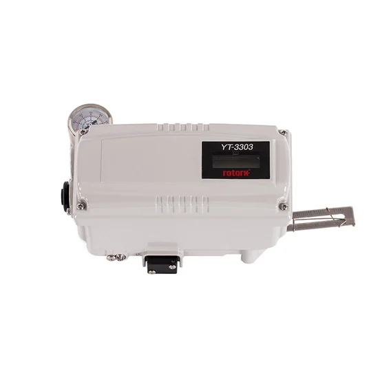
YT-3303
YTC - Smart positioner - YT-3303 Torque motor technology with communications
Xem model →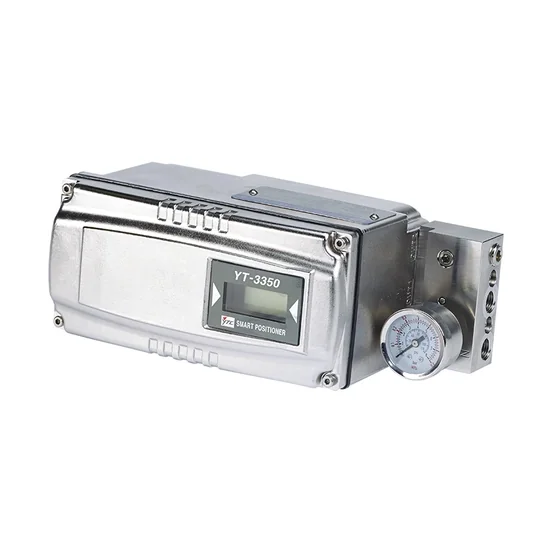
YT-3350
YTC - Smart positioner - YT-3350 Torque motor technology with communications
Xem model →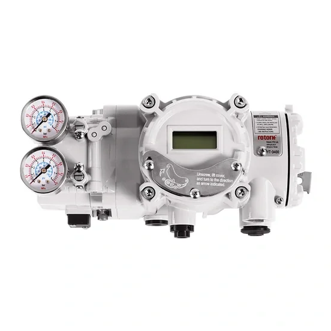
YT-3400
YTC - Smart positioner - YT-3400 Torque motor technology with communications
Xem model →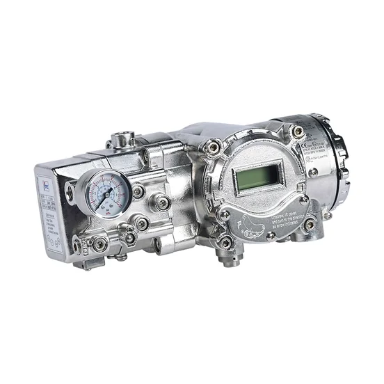
YT-3450
YTC - Smart positioner - YT-3450 Torque motor technology with communications
Xem model →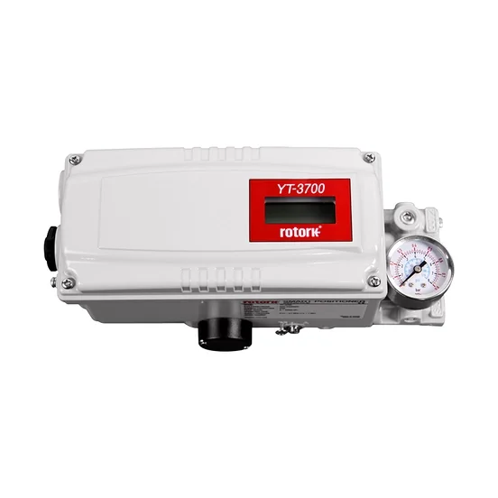
YT-3700
YTC - Smart positioner - YT-3700 Digital smart positioner with enhanced diagnostics
Xem model →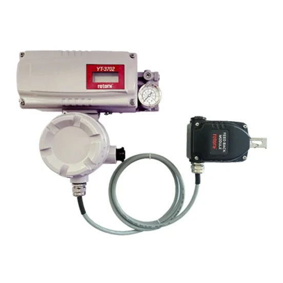
YT-3702
YTC - Smart positioner - YT-3702 Digital smart positioner with enhanced diagnostics
Xem model →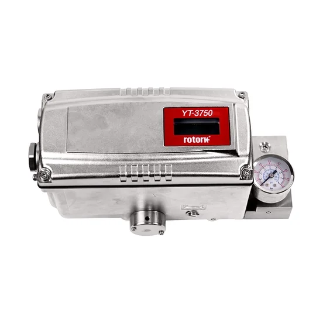
YT-3750
YTC - Smart positioner - YT-3750 Digital smart positioner with enhanced diagnostics
Xem model →Thư viện tài liệu range
Datasheet, manual, brochure và certificate lấy từ nguồn chính thức Rotork.